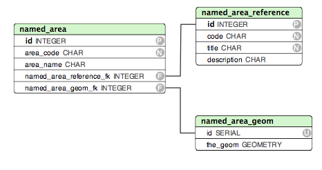

The Named area repository is an archive of polygons for named areas known to be used for species distributions. Most of species range maps or distributions are done, or based on some predefined areas, like countries, ecoregions, counties, etc.
The database has a very simple structure:

The named_area_reference records the different references for named areas: iso2, iso3, tdwg_level_4, etc.
The named_area table holds the different areas: ES, PT, etc...
Finally the named_area_geom is where the geometries for the areas are stored. They are normalized against the named_area table in order to allow areas in different references share the geometries.
The NAR website is simple visualization tool to help users explore the data. But mainly the NAR is considered to be used through webservices or data dumps.
asd
DB Dumps: